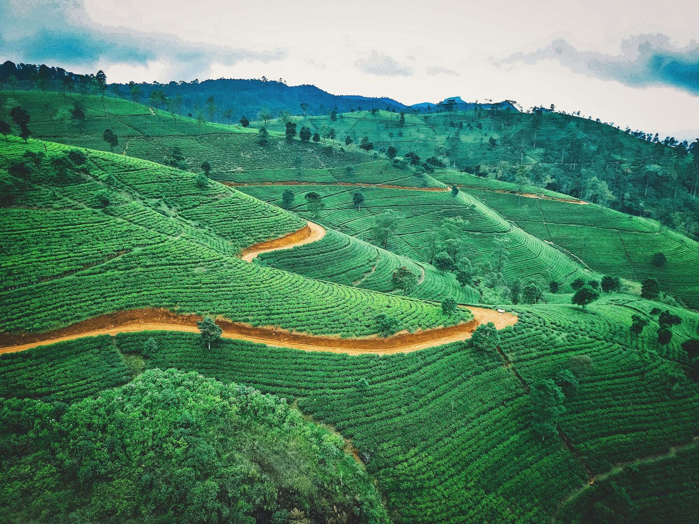
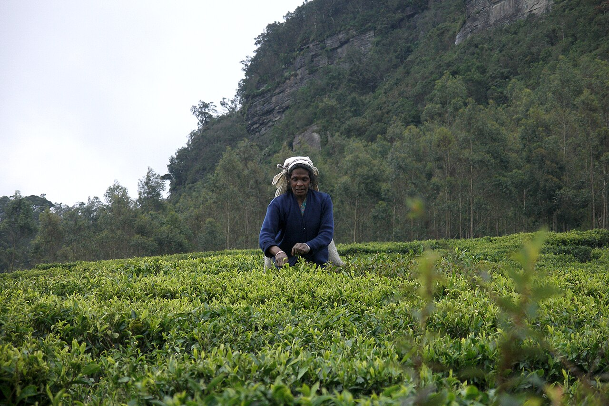
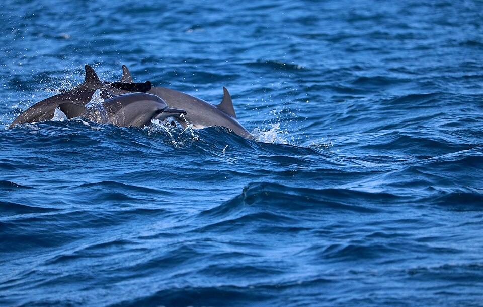

Coconut
Dankotuwa and the Coconut Triangle
Our home. See oil, fibre and desiccated coconut being made, and drink thambili straight from the palm.

ආයුබෝවන්வணக்கம்Welcome
Since 2012 we’ve sourced coconut, spice and tea from farms across Sri Lanka for export. These are the places we know best, and we’d like to take you there.
Tea estate near Nuwara Eliya
Dankotuwa and the Coconut Triangle
Our home. See oil, fibre and desiccated coconut being made, and drink thambili straight from the palm.

Matale
Cinnamon, cardamom, nutmeg and pepper growing side by side. Watch bark peeled into quills by hand.

Nuwara Eliya, 1,868 m
Pluck with the morning shift, then follow the leaf through the factory to the cup.
Four parts of the island, each with its own season. Open the map to see every place and build your own trip.
Use one as a starting point. Every trip is private, with your own driver-guide, and we change anything you like.
12 days
Coconut country, Sigiriya, Kandy, tea country, Yala and the south coast. The best first visit.

4 days
The north-west coast most visitors skip: Negombo, our coconut estates, Chilaw and Kalpitiya.
6 days
The Tamil north, Delft Island and the quiet beaches of Trincomalee.
Two monsoons hit opposite sides of the island, so somewhere is always dry.
We reply within a day with a plan and a price. No booking fee.
0 places in your trip
Send to us